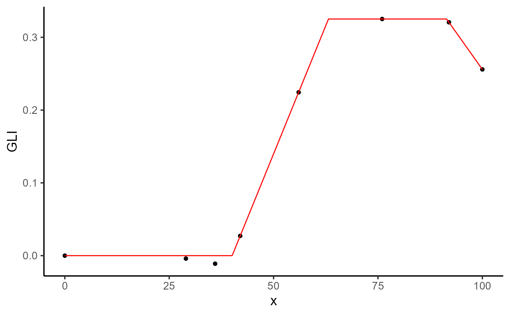

General-purpose optimization for HTP data.
Usage
modeler(
data,
x,
y,
grp,
keep,
id = NULL,
fn = "fn_piwise",
parameters = NULL,
lower = -Inf,
upper = Inf,
initial_vals = NULL,
fixed_params = NULL,
method = c("subplex", "pracmanm", "anms"),
return_method = FALSE,
add_zero = FALSE,
check_negative = FALSE,
max_as_last = FALSE,
n_points = 1000,
max_x = NULL,
progress = FALSE,
parallel = FALSE,
workers = max(1L, parallel::detectCores(), na.rm = TRUE),
control = list()
)Arguments
- data
A data.frame in a wide format.
- x
The name of the column in `data` that contains x points.
- y
The name of the column in `data` that contain the variable to be analyzed. Must match a var in the data.
- grp
The name of the column in `data` that contains a grouping variable. (Optional).
- keep
The names of the columns in `data` to keep across the analysis.
- id
An optional vector with levels of `grp` to filter the data. Default is
NULL, meaning all groups are used.- fn
A string specifying the name of the function to be used for the curve fitting. Default is
"fn_piwise".- parameters
A named numeric vector specifying the initial values for the parameters to be optimized. Default is
NULL.- lower
Numeric vector specifying the lower bounds for the parameters. Default is
-Inffor all parameters.- upper
Numeric vector specifying the upper bounds for the parameters. Default is
Inffor all parameters.- initial_vals
A data frame with columns
uid, and the initial parameter values for each group id. Used for providing specific initial values per group id.- fixed_params
A data frame with columns
uid, and the fixed parameter values for each group id. Used for fixing certain parameters during optimization.- method
A character vector specifying the optimization methods to be used. See
optimxpackage for available methods. Default isc("subplex", "pracmanm", "anms").- return_method
Logical. If
TRUE, includes the optimization method used in the result. Default isFALSE.- add_zero
Logical. If
TRUE, adds a zero value to the series at the start. Default isFALSE.- check_negative
Logical. If
TRUE, converts negative values in the data to zero. Default isFALSE.- max_as_last
Logical. If
TRUE, appends the maximum value after reaching the maximum. Default isFALSE.- n_points
An integer specifying the number of x points to use for approximating the Area Under the Curve (AUC). Default is
1000.- max_x
Numeric. The maximum x value to use for calculating the AUC. Default is
NULL, which uses the last x value in the data.- progress
Logical. If
TRUEa progress bar is displayed. Default isFALSE. Try this before running the function:progressr::handlers("progress", "beepr").- parallel
Logical. If
TRUEthe model fit is performed in parallel. Default isFALSE.- workers
The number of parallel processes to use. `parallel::detectCores()`
- control
A list of control parameters to be passed to the optimization function. For example:
list(maxit = 500).
Value
An object of class modeler, which is a list containing the following elements:
paramA data frame containing the optimized parameters and related information.
dtA data frame with data used and fitted values.
fnThe call used to calculate the AUC.
metricsMetrics and summary of the models.
max_xMaximum x value used for calculating the AUC.
executionExecution time.
responseResponse variable.
keepMetadata to keep across.
funFunction being optimized
fitList with the fitted models.
Examples
library(exploreHTP)
data(dt_potato)
explorer <- explorer(dt_potato, x = DAP, y = c(Canopy, GLI_2), id = Plot)
# Example 1
mod_1 <- dt_potato |>
modeler(
x = DAP,
y = GLI_2,
grp = Plot,
id = 195,
fn = "fn_lin_pl_lin",
parameters = c(t1 = 38.7, t2 = 62, t3 = 90, k = 0.32, beta = -0.01),
add_zero = TRUE
)
plot(mod_1, plot_id = 195)

print(mod_1)
#>
#> Call:
#> GLI_2 ~ fn_lin_pl_lin(x, t1, t2, t3, k, beta)
#>
#> Residuals:
#> Min. 1st Qu. Median Mean 3rd Qu. Max.
#> -0.011076 -0.002262 0.000000 -0.001676 0.000000 0.002262
#>
#> Optimization Results `head()`:
#> uid t1 t2 t3 k beta sse auc
#> 195 39.6 68.3 93.3 0.323 -0.01 0.000149 16.4
#>
#> Metrics:
#> Groups Timing Convergence Iterations
#> 1 0.9211 secs 100% 901 (id)
#>
# Example 2
mod_2 <- dt_potato |>
modeler(
x = DAP,
y = Canopy,
grp = Plot,
id = 195,
fn = "fn_piwise",
parameters = c(t1 = 45, t2 = 80, k = 0.9),
add_zero = TRUE,
max_as_last = TRUE
)
plot(mod_2, id = 195)
 print(mod_2)
#>
#> Call:
#> Canopy ~ fn_piwise(x, t1, t2, k)
#>
#> Residuals:
#> Min. 1st Qu. Median Mean 3rd Qu. Max.
#> -1.340e-09 0.000e+00 0.000e+00 -9.481e-11 1.391e-10 1.391e-10
#>
#> Optimization Results `head()`:
#> uid t1 t2 k sse auc
#> 195 38.7 62 100 1.88e-18 5765
#>
#> Metrics:
#> Groups Timing Convergence Iterations
#> 1 0.598 secs 100% 349 (id)
#>
print(mod_2)
#>
#> Call:
#> Canopy ~ fn_piwise(x, t1, t2, k)
#>
#> Residuals:
#> Min. 1st Qu. Median Mean 3rd Qu. Max.
#> -1.340e-09 0.000e+00 0.000e+00 -9.481e-11 1.391e-10 1.391e-10
#>
#> Optimization Results `head()`:
#> uid t1 t2 k sse auc
#> 195 38.7 62 100 1.88e-18 5765
#>
#> Metrics:
#> Groups Timing Convergence Iterations
#> 1 0.598 secs 100% 349 (id)
#>